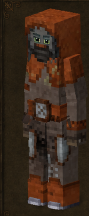
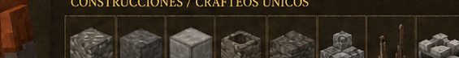

Cantero
Quarrier · código oficial
quarrier · ficha 12/16
Rasgos: 7
Bonus: 13
Malus: 6
Recetas: 70

Resumen humano
piedra y construcción pesada. No es saqueador fino; es obrero de roca.
Esta línea es interpretación funcional breve; lo importante son los números y recetas de abajo.
Bonus objetivos
- afectación de armadura a velocidad: **-75%** (valor interno `-0.75`)
- ahorro de durabilidad de cincel: **+75%** (valor interno `0.75`)
- ahorro de durabilidad de herramientas de piedra: **+100%** (valor interno `1`)
- ahorro de durabilidad de martillo: **+75%** (valor interno `0.75`)
- ahorro de durabilidad de pico: **+75%** (valor interno `0.75`)
- daño con herramientas de piedra: **+50%** (valor interno `0.5`)
- drop de piedra: **+25%** (valor interno `0.25`)
- estabilidad temporal en interiores: **+30%** (valor interno `0.3`)
- probabilidad de roca/piedra suelta: **+50%** (valor interno `0.5`)
- velocidad al picar mineral: **+150%** (valor interno `1.5`)
- velocidad al picar piedra: **+100%** (valor interno `1`)
- velocidad de minado con herramientas de piedra: **+50%** (valor interno `0.5`)
- vida máxima: **+10%** (valor interno `0.1`)
Malus objetivos
- contenido obtenido de vasijas: **-25%** (valor interno `-0.25`)
- drop de cultivos silvestres: **-25%** (valor interno `-0.25`)
- drop de forraje/recolección silvestre: **-25%** (valor interno `-0.25`)
- drop de mineral: **-10%** (valor interno `-0.1`)
- drop/rendimiento de animales: **-10%** (valor interno `-0.1`)
- velocidad al caminar: **-5%** (valor interno `-0.05`)
Rasgos oficiales y efectos reales
| Rasgo | Tipo | Datos objetivos |
|---|---|---|
Obrerolaborer | positivo | afectación de armadura a velocidad: -75% (interno -0.75)vida máxima: +10% (interno 0.1)velocidad al caminar: -5% (interno -0.05) |
Canteroquarrier | positivo | sin atributos numéricos en traits.json; desbloqueo/rasgo de receta |
Ascéticoascetic | positivo | estabilidad temporal en interiores: +30% (interno 0.3)daño con herramientas de piedra: +50% (interno 0.5)ahorro de durabilidad de herramientas de piedra: +100% (interno 1)velocidad de minado con herramientas de piedra: +50% (interno 0.5) |
Canterostonecutter | positivo | probabilidad de roca/piedra suelta: +50% (interno 0.5)drop de piedra: +25% (interno 0.25) |
Tuneladortunneler | positivo | velocidad al picar piedra: +100% (interno 1)velocidad al picar mineral: +150% (interno 1.5)ahorro de durabilidad de pico: +75% (interno 0.75)ahorro de durabilidad de martillo: +75% (interno 0.75)ahorro de durabilidad de cincel: +75% (interno 0.75) |
Protegidosheltered | negativo | drop de forraje/recolección silvestre: -25% (interno -0.25)drop de cultivos silvestres: -25% (interno -0.25)drop/rendimiento de animales: -10% (interno -0.1) |
Torpeclumsy | negativo | drop de mineral: -10% (interno -0.1)contenido obtenido de vasijas: -25% (interno -0.25) |
Recetas / desbloqueos
38mesa normal
24estación
8compatibilidad
70salidas listadas
Categorías detectadas
Banco de corte de piedra: 24Bloques envejecidos: 9Montaje de piezas: 7Tejados y piezas de cubierta: 7Formaciones de cueva: 7Bricklayers: montaje de ladrillos: 7Cuarzo y cristales: 5Procesado de materiales: 3Stone Quarry: cantería: 1
Ver salidas exactas de recetas de esta clase (70)
| Modo | Categoría legible | Resultado legible | Nombre ES |
|---|---|---|---|
| mesa de crafteo normal | Bloques envejecidos | Overlay damagedstone ×16 | — |
| mesa de crafteo normal | Bloques envejecidos | Ladrillos de piedra envejecidos rock ×1 | — |
| mesa de crafteo normal | Bloques envejecidos | Roca pulida antigua bloque completo rock ×1 | — |
| mesa de crafteo normal | Bloques envejecidos | Roca pulida antigua adoquinado rock ×1 | — |
| mesa de crafteo normal | Bloques envejecidos | Crackedstonebricks rock ×1 | — |
| mesa de crafteo normal | Bloques envejecidos | Diamante piedra clean envejecido ×4 | — |
| mesa de crafteo normal | Bloques envejecidos | Diamante piedra dark envejecido ×4 | — |
| mesa de crafteo normal | Bloques envejecidos | Diamante piedra light envejecido ×4 | — |
| mesa de crafteo normal | Bloques envejecidos | Diamante piedra mixed envejecido ×4 | — |
| mesa de crafteo normal | Montaje de piezas | Rock tipo de piedra ×1 | — |
| mesa de crafteo normal | Montaje de piezas | Stonebrick tipo de piedra ×1 | — |
| mesa de crafteo normal | Montaje de piezas | Stonebricks tipo de piedra ×2 | — |
| mesa de crafteo normal | Montaje de piezas | Tile 2x2 liso travertine ×4 | — |
| mesa de crafteo normal | Montaje de piezas | Stonebrickslab tipo de piedra abajo libre ×2 | — |
| mesa de crafteo normal | Montaje de piezas | Tileslab 2x2 liso travertine abajo libre ×2 | — |
| mesa de crafteo normal | Montaje de piezas | Stonebrickstairs tipo de piedra up norte libre ×1 | — |
| mesa de crafteo normal | Procesado de materiales | Piedra tipo de roca ×4 | — |
| mesa de crafteo normal | Procesado de materiales | Gravel tipo de piedra ×1 | — |
| mesa de crafteo normal | Procesado de materiales | Sand graveltype ×1 | — |
| mesa de crafteo normal | Cuarzo y cristales | Cuarzo liso ×1 | — |
| mesa de crafteo normal | Cuarzo y cristales | Cuarzo ornate ×1 | — |
| mesa de crafteo normal | Cuarzo y cristales | Quartzpillar vertical ×1 | — |
| mesa de crafteo normal | Cuarzo y cristales | Quartzslab abajo libre ×4 | — |
| mesa de crafteo normal | Cuarzo y cristales | Quartzstairs up norte libre ×4 | — |
| mesa de crafteo normal | Tejados y piezas de cubierta | Tejado inclinado slate este libre ×8 | — |
| mesa de crafteo normal | Tejados y piezas de cubierta | Cumbrera de tejado slate norte-sur libre ×8 | — |
| mesa de crafteo normal | Tejados y piezas de cubierta | Punta de tejado slate libre ×8 | — |
| mesa de crafteo normal | Tejados y piezas de cubierta | Esquina interior de tejado slate este libre ×8 | — |
| mesa de crafteo normal | Tejados y piezas de cubierta | Esquina exterior de tejado slate este libre ×8 | — |
| mesa de crafteo normal | Tejados y piezas de cubierta | Beam ridge slate libre ×16 | — |
| mesa de crafteo normal | Tejados y piezas de cubierta | Beam plane slate libre ×16 | — |
| mesa de crafteo normal | Formaciones de cueva | Stalagsection rock 14 ×8 | — |
| mesa de crafteo normal | Formaciones de cueva | Stalagsection rock 12 ×8 | — |
| mesa de crafteo normal | Formaciones de cueva | Stalagsection rock 10 ×8 | — |
| mesa de crafteo normal | Formaciones de cueva | Stalagsection rock 08 ×8 | — |
| mesa de crafteo normal | Formaciones de cueva | Stalagsection rock 06 ×8 | — |
| mesa de crafteo normal | Formaciones de cueva | Stalagsection rock 04 ×8 | — |
| mesa de crafteo normal | Formaciones de cueva | Crackedrock rock ×1 | — |
| estación especial | Banco de corte de piedra | Piedra piedra ×4 | — |
| estación especial | Banco de corte de piedra | Gravel piedra ×1 | — |
| estación especial | Banco de corte de piedra | Sand piedra ×1 | — |
| estación especial | Banco de corte de piedra | Sandwavy piedra ×1 | — |
| estación especial | Banco de corte de piedra | Cobbleskull piedra ×1 | — |
| estación especial | Banco de corte de piedra | Cobblestoneslab piedra abajo libre ×2 | — |
| estación especial | Banco de corte de piedra | Cobblestone piedra ×1 | — |
| estación especial | Banco de corte de piedra | Cobblestonestairs piedra up norte libre ×1 | — |
| estación especial | Banco de corte de piedra | Rockpolished piedra ×1 | — |
| estación especial | Banco de corte de piedra | Polishedrockslab piedra abajo libre ×2 | — |
| estación especial | Banco de corte de piedra | Tile 2x2 liso travertine ×2 | — |
| estación especial | Banco de corte de piedra | Tileslab 2x2 liso travertine abajo libre ×4 | — |
| estación especial | Banco de corte de piedra | Stonebricks piedra ×1 | — |
| estación especial | Banco de corte de piedra | Stonebrickslab piedra abajo libre ×2 | — |
| estación especial | Banco de corte de piedra | Stonebrickstairs piedra up norte libre ×1 | — |
| estación especial | Banco de corte de piedra | Drystone piedra ×1 | — |
| estación especial | Banco de corte de piedra | Drystonefence piedra este-oeste libre ×1 | — |
| estación especial | Banco de corte de piedra | Crackedrock piedra ×1 | — |
| estación especial | Banco de corte de piedra | Cobblestonefan piedra norte ×1 | — |
| estación especial | Banco de corte de piedra | Roca pulida antigua bloque completo piedra ×1 | — |
| estación especial | Banco de corte de piedra | Roca pulida antigua adoquinado piedra ×1 | — |
| estación especial | Banco de corte de piedra | Ladrillos de piedra envejecidos piedra ×1 | — |
| estación especial | Banco de corte de piedra | Crackedstonebricks piedra ×1 | — |
| estación especial | Banco de corte de piedra | Rock piedra ×1 | — |
| receta de compatibilidad | Bricklayers: montaje de ladrillos | Stonetile normal piedra ×1 | — |
| receta de compatibilidad | Bricklayers: montaje de ladrillos | Stonetile shiny piedra ×1 | — |
| receta de compatibilidad | Bricklayers: montaje de ladrillos | Stonetiles dull piedra ×1 | — |
| receta de compatibilidad | Bricklayers: montaje de ladrillos | Stonetiles polished piedra ×1 | — |
| receta de compatibilidad | Bricklayers: montaje de ladrillos | Smallstonebricks piedra ×2 | — |
| receta de compatibilidad | Bricklayers: montaje de ladrillos | Smallstonebrickslab piedra abajo libre ×2 | — |
| receta de compatibilidad | Bricklayers: montaje de ladrillos | Smallstonebrickstairs piedra up norte libre ×2 | — |
| receta de compatibilidad | Stone Quarry: cantería | Plugandfeather metal 0 abajo norte ×4 | — |
Archivos de esta ficha
Markdown corregido · PNG corregido · Fuente objetiva original si existe
{kind=link}